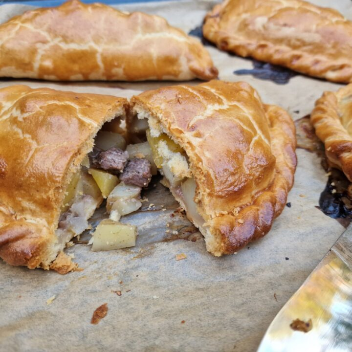

What is a Cornish Pasty?
A pasty is a British baked pastry, a traditional variety
of which is particularly associated with Cornwall, South
West England, but has spread all over the British Isles.
It is made by placing an uncooked filling, typically meat
and vegetables, on one half of a flat shortcrust pastry
circle, folding the pastry in half to wrap the filling in
a semicircle and crimping the curved edge to form a seal
before baking.
Ingredients:
For the shortcrust pastry
- 500g strong bread flour
- 120g lard
- 125g Cornish butter
- 1 tsp salt
- 175ml cold water
For the filling
- 400g beef skirt, cubed
- 300g potato, peeled and diced
- 150g swede/turnip, peeled and diced
- 150g onion, peeled and diced
- Salt and pepper to taste
- Beaten egg or milk to glaze
Method
- Add the salt to the flour in a large mixing bowl.
- Rub the two types of fat lightly into flour until it
resembles breadcrumbs.
- Add water, bring the mixture together and knead until
the pastry becomes elastic. This will take longer than
normal pastry but it gives the pastry the strength that
is needed to hold the filling and retain a good shape.
This can also be done in a food mixer.
- Cover with cling film and leave to rest for 3 hours in
the fridge. This is a very important stage as it is almost
impossible to roll and shape the pastry when fresh.
- Roll out the pastry and cut into circles approx. 20cm diameter.
A side plate is an ideal size to use as a guide.
- Layer the vegetables and meat on top of the pastry, adding plenty
of seasoning as you go. The amount of salt and pepper to use will
vary according to taste but a good rule of thumb is to use a good
pinch of salt and a gentle pinch of pepper on each layer.
- Bring the pastry around and crimp the edges together
- Glaze with beaten egg or an egg and milk mixture.
- Bake at 165 degrees C (fan oven) for about 50 to 55 minutes until golden.